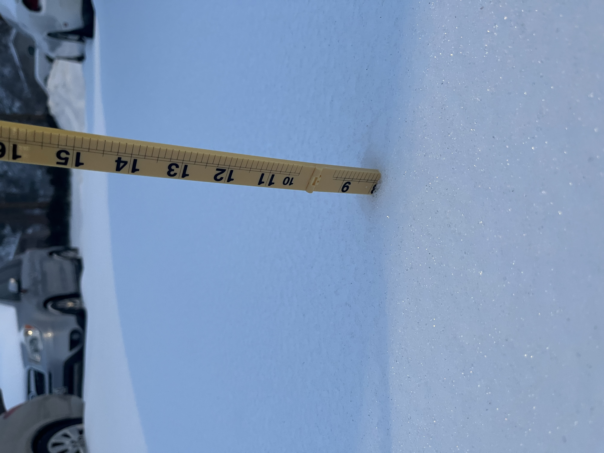

Precipitation
An overview of the different types of precipitation, radars, and how meteorologists track and forecast precipitation.

Types of Precipitation
What falls from a cloud almost always starts out as snow. What it turns into by the time it reaches the ground depends entirely on the temperature profile it falls through — specifically, how much of that path is above freezing versus below freezing.
Snow
Snow forms when the entire atmospheric column, from the cloud all the way to the surface, stays at or below freezing. Since the snowflake never encounters an air layer warm enough to melt it, it reaches the ground still frozen.
Sleet
Sleet occurs when a snowflake falls through a shallow layer of air above freezing, partially melting it, before falling back into a deep enough layer of sub-freezing air near the surface to refreeze it into a small ice pellet before it reaches the ground.
Freezing Rain
Freezing rain forms when a snowflake falls through a deeper warm layer, fully melting into a raindrop. It then passes through only a thin layer of sub-freezing air near the surface, which is too shallow to refreeze it before landing. Instead, it stays liquid until it strikes a surface that is at or below freezing, where it freezes on contact.
Rain
Rain falls when the warm layer extends essentially all the way to the surface. The snowflake melts aloft and never re-enters a sub-freezing layer, so it reaches the ground as plain liquid rain.
How Precipitation Type Is Determined
The diagram below shows a simplified version of the atmospheric temperature profile behind each precipitation type. Blue represents air below freezing, and red represents air above freezing. Click a button below to switch between types.
No melting occurs — falls to the ground as snow.
Partially melts, then refreezes into ice pellets before reaching the ground.
Fully melts into rain, then freezes instantly on contact with the below-freezing surface.
Melts aloft and never refreezes — reaches the ground as plain rain.
Forecasting Snowfall Totals
Placeholder content — this section will explain how meteorologists use snow ratios and model data to estimate accumulation.
Common Snow Forecasting Challenges
Placeholder content — this section will discuss elevation, mixed precipitation, and other factors that make snow forecasts difficult.